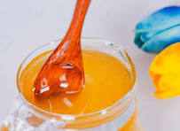

CATEGORIES OF HONEY THAT WE HAVE ARE:
BELL HONEY

Bell honey is a type of honey produced from the nectar of bell-shaped flowers,
characterized by its distinctive flavor and aroma, often described as floral and slightly sweet.
APIARY HONEY

Apiary honey is a sweet, viscous fluid produced by bees from the nectar of flowers,
carefully harvested and extracted from beehives by beekeepers.
RED HONEY

The red honey was a rich, vibrant delight,
with a fruity flavor profile and a hint of spice that added depth to my tea.
LYCHEE HONEY

The lychee honey was a delightful combination of floral, fruity,
and tropical flavors, with a delicate sweetness and a hint of butteriness.
FILTERED HONEY

The filtered honey was a clear, refined delight,
with a light, smooth flavor that was perfect for baking.